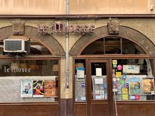
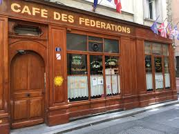

Le Musée is one of Lyon’s most beloved bouchon restaurants, offering an authentic and deeply traditional dining experience. Tucked away on a quiet street, it’s known for its warm, convivial atmosphere and classic Lyonnais dishes prepared with care and precision. From rich pâtés to slow-cooked specialties, every meal reflects the city’s culinary heritage, making Le Musée a must-visit for anyone looking to experience Lyon’s food culture at its most genuine.

Café des Fédérations is one of Lyon’s most iconic bouchon restaurants, celebrated for its lively atmosphere and unwavering commitment to tradition. With its checkered tablecloths, close quarters, and friendly, communal energy, it offers a true taste of Lyonnaise dining culture. The menu features hearty classics like quenelles and slow-cooked meats, all served generously and paired with local wines—making it an essential stop for anyone wanting an authentic, no-frills culinary experience in Lyon.